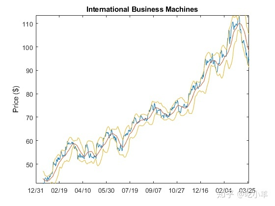

Home
Financial Toolbox中的bolling函数使用IBM?股票价格矩阵中的所有收盘价来生成布林带图。布林带图绘制了实际数据以及其他三个数据带。上带是移动均线上方的两倍标准差；下带是该移动平均线以下的两倍标准差；中间带是移动平均线本身。本示例使用15天移动平均线。首先，使用ibm.dat数据文件加载数据，然后执行该bolling函数绘制布林带。
load ibm.dat;
[ro, co] = size(ibm);
bolling(ibm(:,4), 15, 0);
Warning: BOLLING will be removed in a future release. Use BOLLINGER instead.
axis([0 ro min(ibm(:,4)) max(ibm(:,4))]);
ylabel('Price ($)');
title(['International Business Machines']);
dateaxis('x', 6,'31-Dec-1994')
指定轴，标签和标题。使用dateaxis添加的X轴日期。
有关使用MATLAB?绘图功能的帮助，请参见MATLAB文档中的创建二维线图（MATLAB）。请参阅有关细节MATLAB文档axis，title，xlabel，和ylabel函数。
注：本文根据MATLAB官网内容修改而成。
======================================================================
我的测试结果及程序
下面是我测试的代码：